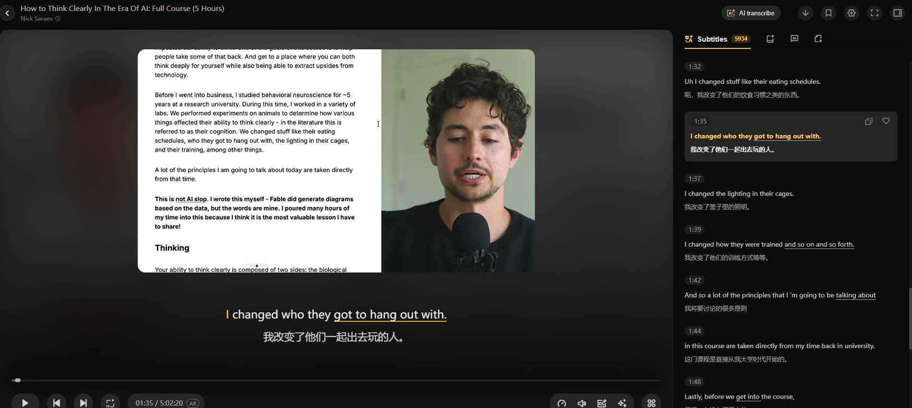

学习空间

Clear thinking starts with separating what you know from what you assume.
清晰思考的第一步，是分清已知事实与自己的假设。
01:32/ 18:42
How to Think Clearly in the Age of AI
如何在 AI 时代保持清晰思考

Clear thinking starts with separating what you know from what you assume.
清晰思考的第一步，是分清已知事实与自己的假设。
如何在 AI 时代保持清晰思考